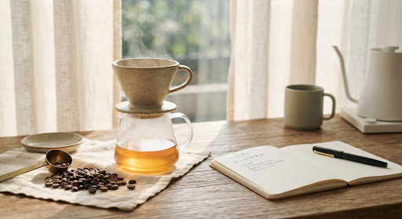

ABOUT RURU / COFFEE FOR EVERYDAY
留一點時間，給喜歡的咖啡。
從第一口的香氣，到放下杯子的甘甜，我們希望咖啡是日常裡一段從容的時間。認識不同產區的風味，選擇適合自己的沖煮節奏。

探索熟豆選品
從薇薇特南果、衣索比亞到巴西與印尼，我們整理五款熟豆的產區、處理法與風味參考。每款提供 250g 與 500g 規格，方便依照自己的品飲習慣選擇。
把每一杯，沖成你的喜歡。
參考商品頁的粉水比、水溫與研磨建議，再依口味調整。這些是起始參數，不是唯一答案；讓咖啡陪你慢慢找到自己的節奏。
LEARN & ENJOY
教你沖，也陪你選。
課程預約與選豆歡迎透過露露咖啡日記 LINE 洽詢，訂單與售後請來信 mmulight@gmail.com。
聯絡與服務 ↗